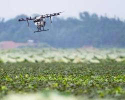
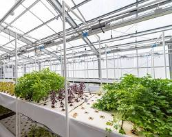
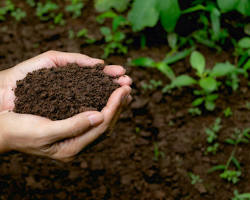
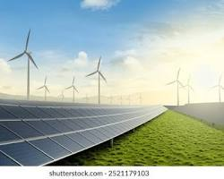
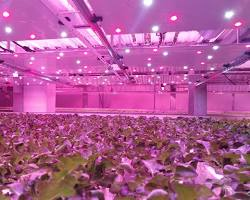
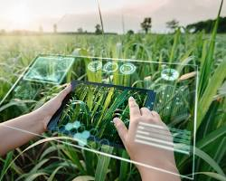
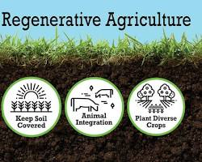

The Urban Green Revolution: Vertical Farming's Rise
Discover how vertical farms are transforming cityscapes into productive agricultural hubs, bringing fresh produce closer to consumers.
Read Article →Pioneering advanced solutions in farming, technology, and ecological balance for global food security.
Discover Our Innovations Partner With UsAt Agri-Ventures, we believe in the power of innovation to transform the agricultural landscape. We are a collective of scientists, farmers, engineers, and investors united by a shared vision: to foster a new era of farming that is both highly productive and deeply sustainable.
To cultivate groundbreaking agricultural technologies and practices that ensure food security, enhance environmental health, and empower farming communities worldwide.
To be the leading catalyst for sustainable agricultural growth, recognized for our commitment to innovation, integrity, and impact on a global scale.
Explore the diverse range of projects where Agri-Ventures is making a tangible difference, from smart farming to renewable energy integration.

Leveraging AI, IoT, and drone technology for optimized crop management, predictive analytics, and resource efficiency.
Learn More →
Designing closed-loop systems that combine aquaculture with hydroponics, producing both fish and plants sustainably.
Learn More →
Developing eco-friendly fertilizers and pest control solutions that enrich soil health and reduce chemical dependency.
Learn More →
Implementing solar and wind energy solutions to power farms, reducing carbon footprint and operational costs.
Learn More →Stay informed with the latest trends, breakthroughs, and stories from the world of sustainable agriculture.

Discover how vertical farms are transforming cityscapes into productive agricultural hubs, bringing fresh produce closer to consumers.
Read Article →
From precision irrigation to disease detection, explore the revolutionary impact of Artificial Intelligence on modern farming practices.
Read Article →
Learn about the principles of regenerative farming that aim to not just sustain but actively improve ecosystem health.
Read Article →Whether you're an investor, an innovator, or a farming community leader, we invite you to explore partnership opportunities with Agri-Ventures.
Get in Touch With UsHave questions, ideas, or looking to collaborate? Reach out to our team!
Agri-Ventures Global HQ
CBD, NAIROBI, GE 45678
COUNTRY: KENYA
Email: info@agri-ventures.com
Phone: +254700034573